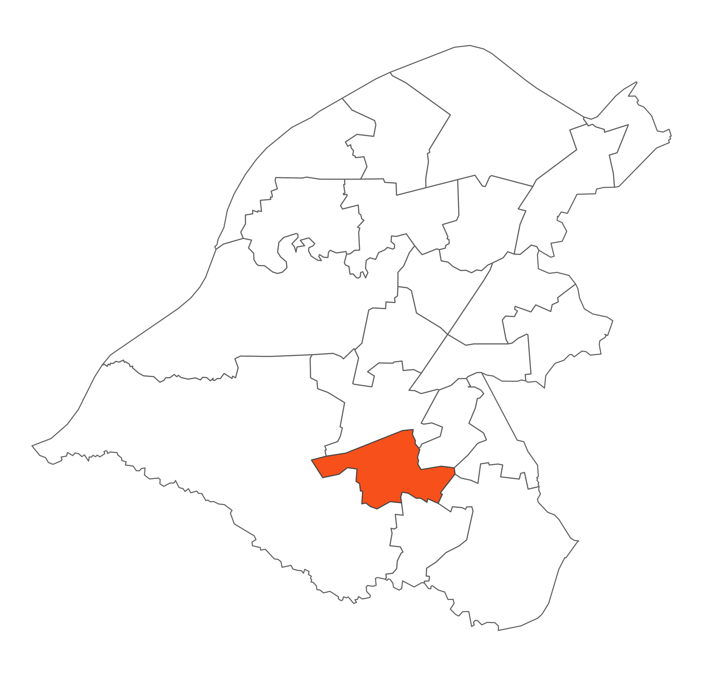

 Altrincham is a sub-regional shopping centre, and Trafford's largest town. It's at the hub of south Manchester's modern transport infrastructure, complemented by an integrated rail, Metrolink and bus Interchange, which is undergoing redevelopment. It also acts as the commercial centre for the area providing extensive office accommodation. It has an historic market quarter, which regeneration works continue to modernise and upgrade.
Major developments have taken place within the ward including the refurbishment of Altrincham Town Hall, a new piece of public art in the grounds of the Town Hall, Silver Blades Ice Rink, a six-screen Apollo Cinema including private car park, Altair, a proposed major development to include retail, leisure and housing, and the Stamford Quarter Retail Centre.